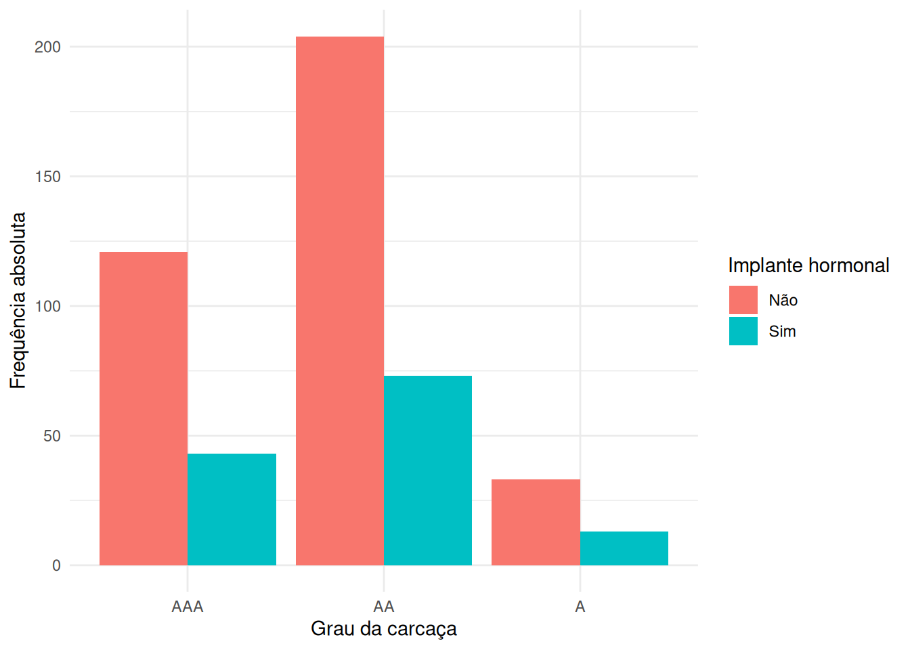
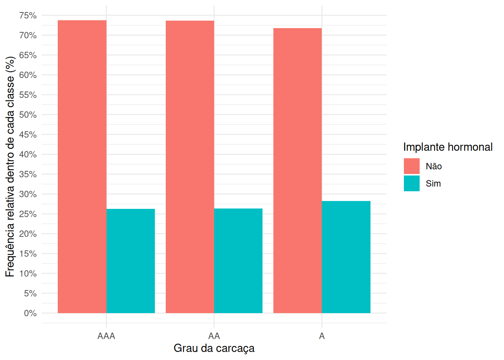
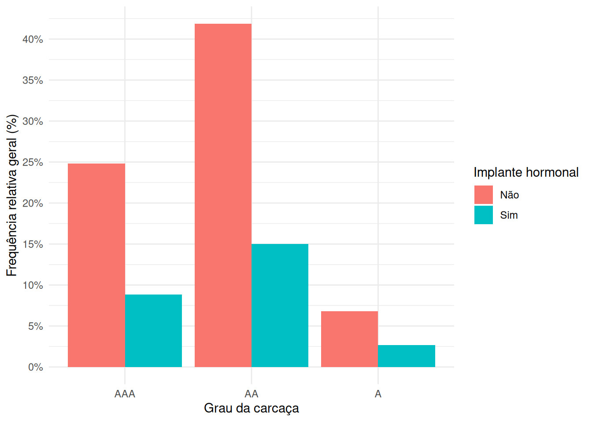
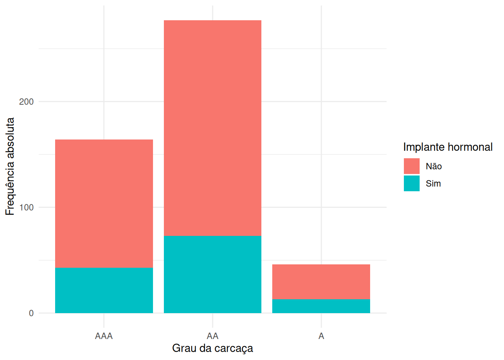
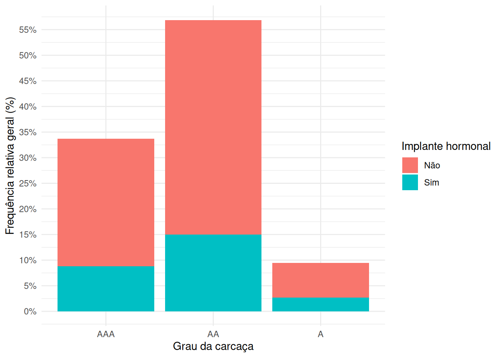

Relatório do segundo treinamento onde foi apresentado como importar dados e manipulá-los no R, bem como as principais estatísticas descritivas univariadas e multivariadas.
No treinamento anteriormente estudamos como avaliar o comportamento de uma variável isoladamente, por meio de medidas de posição, dispersão e forma. Agora, nesse treinamento, iremos avaliar o comportamento conjunto de duas variáveis, explorando suas relações, associações e dependências. Ou seja, diferente da análise univariada, aqui investigamos como duas variáveis variam conjuntamente.
Didaticamente, tentaremos separar o conteúdo em dois tipos de situações:
quando ambas as variáveis são qualitativas (ou tratadas como qualitativas);
quando ambas as variáveis são quantitativas (ou tratadas como quantitativas).
1.1 Tabelas de distribuição conjunta de frequências
Considere duas variáveis qualitativas, \(X\) e \(Y\). Quando usamos tabelas de distribuição conjunta de frequências (tabela de contingência ou tabela de classificação cruzada), buscamos calcular para cada nível (categoria) de \(X\), qual a frequência observada em \(Y\).
Matematicamente, essa tabela será definida como uma matriz da seguinte forma:
a tabela de valores será uma matriz \(r \times j\), em que \(r\) é o número de categorias em \(X\) e representa o número de linhas da tabela, enquanto, \(j\) é o número de categorias em \(Y\) e representa o número de colunas da tabela;
cada célula da tabela (cada valor) será representado por \(n_{is}\), que representa o número de observações que apresentaram categoria \(i\) de \(X\) e a categoria \(s\) de \(Y\) (\(i=1,2,...,r\) e \(s=1,2,...,j\));
além disso, caso a tabela apresente totais marginais, teremos a adição de uma última linha de frequências totais em cada categoria de \(Y\) (representado por \(n_{.s}\)) e a adição de uma última coluna de frequências totais em cada categoria de \(X\) (representado por \(n_{i.}\)), sendo que a última célula da coluna e linha de totais representará nosso \(n\) amostral (o número total de observações).
Ou seja, teremos uma tabela na seguinte forma:
\(Y_1\)
\(Y_2\)
…
\(Y_j\)
Total
\(X_1\)
\(n_{11}\)
\(n_{12}\)
…
\(n_{1j}\)
\(n_{1.}\)
\(X_2\)
\(n_{21}\)
\(n_{22}\)
…
\(n_{2j}\)
\(n_{2.}\)
…
…
…
…
…
…
\(X_r\)
\(n_{r1}\)
\(n_{r2}\)
…
\(n_{rj}\)
\(n_{r.}\)
Total
\(n_{.1}\)
\(n_{.2}\)
…
\(n_{.j}\)
\(n\)
Nessa situação de tabela de contingência com totais marginais, teremos as frequências conjuntas (\(n_{is}=\{X=X_i, Y=Y_s\}\)) e as frequências marginais (\(n_{i.} = \sum_{s=1}^j n_{is}\) e \(n_{.s} = \sum_{i=1}^r n_{is}\)). Entretanto, outra forma de apresentar esses dados seria ao invés de usar frequências absolutas se usassemos frequências relativas. Nesse caso, para as frequências conjuntas calculamos \(f_{is}=n_{is}/n\) e para as frequências maginais calculamos \(f_{i.}=n_{i.}/n\) e \(f_{.s}=n_{.s}/n\).
Para a tabela de contingência usando frequências relativas, caso a nossa amostragem seja representativa dessa variação conjunta das variáveis \(X\) e \(Y\) na nossa população em estudo, podemos interpretá-la como probabilidades empíricas, de modo que:
\(f_{is}=\frac{n_{is}}{n} \approx P(X=X_i, Y=Y_s)\) é a probabilidade conjunta, ou seja, a probabilidade de uma observação ser da categoria \(i\) em \(X\) e da categoria \(s\) em \(Y\);
\(f_{i.}=\frac{n_{i.}}{n} \approx P(X=X_i)\) e \(f_{.s}=\frac{n_{.s}}{n} \approx P(Y=Y_s)\) são as probabilidades marginais, ou seja, a probabilidade de uma observação ser da categoria \(i\) de \(X\) e de qualquer outra categoria de \(Y\), ou o contrário; e
\(\frac{f_{is}}{f_{i.}}=\frac{n_{is}}{n_{i.}} \approx P(Y=Y_s | X=X_i)\) e \(\frac{f_{is}}{f_{.s}}=\frac{n_{is}}{n_{.s}} \approx P(X=X_i|Y=Y_s)\) são as probabilidades condicionais, ou seja, a probabilidade de uma observação ser da categoria \(s\) em \(Y\) considerando que eu já sei que ela é da categoria \(i\) em \(X\) no primeiro caso, e a probabilidade de uma observação ser da categoria \(i\) em \(X\) considerando que eu já sei que ela é da categoria \(s\) em \(Y\).
Essas probabilidades empíricas serão a base para as métricas de associação e dependência que usaremos no teste \(\chi^2\) de independência.
No R, tabelas de contingência podem ser obtidas usando table ou xtabs:
Tabela de contingência das frequência relativas (%)
Implante Hormonal
Não
Sim
Total
Grau
AAA
24.85
8.83
33.68
AA
41.89
14.99
56.88
A
6.78
2.67
9.45
Total
73.51
26.49
100.00
No xtabs, o principal ganho é que você consegue criar tabelas de frequências com mais de duas dimensões:
Mostrar código
tab_multi_dim <-xtabs(~ grade + implant + sex, data = beef_ultra)addmargins( tab_multi_dim[,,"Macho"],FUN =list(Total = sum),quiet =TRUE) %>%kable(caption ="Tab. de contingência dos machos") %>%add_header_above(c(" "=1, "Implante Hormonal"=3)) %>%pack_rows(index =c("Grau"=3))
Tab. de contingência dos machos
Implante Hormonal
Não
Sim
Total
Grau
AAA
57
43
100
AA
121
64
185
A
18
11
29
Total
196
118
314
Mostrar código
addmargins( tab_multi_dim[,,"Fêmea"],FUN =list(Total = sum),quiet =TRUE) %>%kable(caption ="Tab. de contingência das fêmeas") %>%add_header_above(c(" "=1, "Implante Hormonal"=3)) %>%pack_rows(index =c("Grau"=3))
Tab. de contingência das fêmeas
Implante Hormonal
Não
Sim
Total
Grau
AAA
64
0
64
AA
83
9
92
A
15
2
17
Total
162
11
173
1.2 Apresentando a distribuição conjunta de frequências como gráficos
Para analisar a distribuição em conjunto de duas variáveis podemos usar gráficos de barras agrupadas ou empilhadas, gráficos de mosaico e mapas de calor.
Nos gráficos de barras agrupados, cada nível de \(X\) será representado por uma posição (marcação) nas abscissas e em cada posição teremos uma barra para cada nível de \(Y\), sendo a altura da barra representada pela frequência (absoluta ou relativa).
Mostrar código
contagens <- beef_ultra %>%count(grade, implant) %>%group_by(grade) %>%mutate(prop_dentro = n /sum(n) ) %>%ungroup() %>%mutate(prop_entre = n /sum(n) )p1 <-ggplot(contagens, aes(x = grade, fill = implant, y=n)) +geom_bar(stat="identity", position ="dodge") +labs(x ="Grau da carcaça",y ="Frequência absoluta",fill ="Implante hormonal" ) +theme_minimal()p2 <-ggplot(contagens, aes(x = grade, fill = implant, y=prop_dentro)) +geom_bar(stat="identity", position ="dodge") +scale_y_continuous(labels = scales::label_percent(),breaks = scales::breaks_width(width = .05), ) +scale_y_continuous(labels = scales::label_percent(),breaks = scales::breaks_width(width = .05), ) +labs(x ="Grau da carcaça",y ="Frequência relativa dentro de cada classe (%)",fill ="Implante hormonal" ) +theme_minimal()p3 <-ggplot(contagens, aes(x = grade, fill = implant, y=prop_entre)) +geom_bar(stat="identity", position ="dodge") +scale_y_continuous(labels = scales::label_percent(),breaks = scales::breaks_width(width = .05), ) +scale_y_continuous(labels = scales::label_percent(),breaks = scales::breaks_width(width = .05), ) +labs(x ="Grau da carcaça",y ="Frequência relativa geral (%)",fill ="Implante hormonal" ) +theme_minimal()
Mostrar código
p1

Distribuição conjunta de frequências por gráficos de barras agrupados (Freq. absoluta)
Mostrar código
p2

Distribuição conjunta de frequências por gráficos de barras agrupados (Freq. relativa dentro de cada nível)
Mostrar código
p3

Distribuição conjunta de frequências por gráficos de barras agrupados (Freq. relativa geral)
Já no gráfico de barras empilhadas, cada barra representa um nível de \(X\) e essa barra é subdivida, normalmente pela cor de preenchimento, com a contagem correspondente de \(Y\), dando o aspecto de que uma barra foi colocada acima da outra.
Mostrar código
p1 <-ggplot(contagens, aes(x = grade, fill = implant, y=n)) +geom_bar(stat="identity", position ="stack") +labs(x ="Grau da carcaça",y ="Frequência absoluta",fill ="Implante hormonal" ) +theme_minimal()p2 <-ggplot(contagens, aes(x = grade, fill = implant, y=prop_dentro)) +geom_bar(stat="identity", position ="stack") +scale_y_continuous(labels = scales::label_percent(),breaks =seq(0, 1, .05),limits =c(0, NA) ) +labs(x ="Grau da carcaça",y ="Frequência relativa dentro de cada classe (%)",fill ="Implante hormonal" ) +theme_minimal()p3 <-ggplot(contagens, aes(x = grade, fill = implant, y=prop_entre)) +geom_bar(stat="identity", position ="stack") +scale_y_continuous(labels = scales::label_percent(),breaks =seq(0, .7, .05),limits =c(0, NA) ) +labs(x ="Grau da carcaça",y ="Frequência relativa geral (%)",fill ="Implante hormonal" ) +theme_minimal()
Mostrar código
p1

Distribuição conjunta de frequências por gráficos de barras empilhados (Freq. absoluta)
Mostrar código
p2
Distribuição conjunta de frequências por gráficos de barras empilhados (Freq. relativa dentro de cada nível)
Mostrar código
p3

Distribuição conjunta de frequências por gráficos de barras empilhados (Freq. relativa geral)
2 o que apresentarei
Estatística descritiva bivariada
Associação entre duas variáveis qualitativas
Tabelas de distribuição conjunta de frequências
Medidas de associação
Estatística qui-quadrado
Outras medidas de associação baseadas no qui-quadrado
coeficiente de Spearman
Correlação entre duas variáveis quantitativas
Tabelas de distribuição conjunta de frequências
Representação gráfica por meio de um diagrama de dispersão
@online{teixeira_paiva2025,
author = {Teixeira Paiva, Marcelo},
title = {Café com estatística e R},
volume = {1},
number = {1},
date = {2025-10-30},
langid = {pt-BR},
abstract = {Relatório do segundo treinamento onde foi apresentado como
importar dados e manipulá-los no R, bem como as principais
estatísticas descritivas univariadas e multivariadas.}
}
Por favor, cite este trabalho como:
Teixeira Paiva, Marcelo. 2025. “Café com estatística e R.”
Café com estatística e R: Treinamento 2 - Importação e manipulação de
dados no R e estatística descritiva, parte 1. October 30, 2025.
Código fonte
---title: "Café com estatística e R"subtitle: "Treinamento 2 - estatística descritiva: parte 2"date: last-modifiedauthor: - name: Marcelo Teixeira Paiva orcid: 0000-0001-6334-073X email: marcelo_thelin@hotmail.com affiliation: - name: CRMV-MG city: Belo Horizonte state: MG country: Brazil url: portal.crmvmg.gov.brabstract: > Relatório do segundo treinamento onde foi apresentado como importar dados e manipulá-los no R, bem como as principais estatísticas descritivas univariadas e multivariadas.keywords: - statistical analysislicense: "CC BY-NC"copyright: holder: Marcelo Paiva year: 2025citation: container-title: "Café com estatística e R: Treinamento 2 - Importação e manipulação de dados no R e estatística descritiva, parte 1" volume: 1 issue: 1funding: "The author received no specific funding for this work."lang: pt-BRbibliography: referencias.bibtoc: truetoc-depth: 5toc-expand: truetoc-title: "Índice"number-sections: trueformat: html: code-fold: true code-summary: "Mostrar código" code-tools: true highlight-style: ayu-mirage code-line-numbers: true theme: light: journal dark: superhero fontsize: 1.1em linestretch: 1.7 max-width: 1800px margin: 1rem pdf: documentclass: report lof: true lot: true geometry: - top=30mm - left=20mm - heightrounded colorlinks: trueeditor: markdown: wrap: 72---```{r}#| label: setup#| warning: falseoptions(repos =c(CRAN ="https://cloud.r-project.org"))library(tidyverse)library(gridExtra)library(tidyverse)library(kableExtra)beef_ultra <- haven::read_dta("../datasets/stata/beef_ultra.dta",encoding ="UTF-8" ) %>%as_factor() %>%mutate(implant =fct_recode( implant,"Não"="no","Sim"="yes" ),sex =fct_recode( sex,"Fêmea"="female","Macho"="steer" ), )```# Estatística descritiva bivariadaNo treinamento anteriormente estudamos como avaliar o comportamento de uma variável isoladamente, por meio de medidas de posição, dispersão e forma. Agora, nesse treinamento, iremos avaliar o comportamento conjunto de duas variáveis, explorando suas relações, associações e dependências. Ou seja, diferente da análise univariada, aqui investigamos como duas variáveis variam conjuntamente.Didaticamente, tentaremos separar o conteúdo em dois tipos de situações:a. quando ambas as variáveis são qualitativas (ou tratadas como qualitativas);b. quando ambas as variáveis são quantitativas (ou tratadas como quantitativas).## Tabelas de distribuição conjunta de frequênciasConsidere duas variáveis qualitativas, $X$ e $Y$. Quando usamos tabelas de distribuição conjunta de frequências (tabela de contingência ou tabela de classificação cruzada), buscamos calcular para cada nível (categoria) de $X$, qual a frequência observada em $Y$.Matematicamente, essa tabela será definida como uma matriz da seguinte forma:- a tabela de valores será uma matriz $r \times j$, em que $r$ é o número de categorias em $X$ e representa o número de linhas da tabela, enquanto, $j$ é o número de categorias em $Y$ e representa o número de colunas da tabela;- cada célula da tabela (cada valor) será representado por $n_{is}$, que representa o número de observações que apresentaram categoria $i$ de $X$ e a categoria $s$ de $Y$ ($i=1,2,...,r$ e $s=1,2,...,j$);- além disso, caso a tabela apresente totais marginais, teremos a adição de uma última linha de frequências totais em cada categoria de $Y$ (representado por $n_{.s}$) e a adição de uma última coluna de frequências totais em cada categoria de $X$ (representado por $n_{i.}$), sendo que a última célula da coluna e linha de totais representará nosso $n$ amostral (o número total de observações).Ou seja, teremos uma tabela na seguinte forma:|| $Y_1$ | $Y_2$ | ... | $Y_j$ | Total ||-------|----------|-----------|-----|-----------|----------|| $X_1$ | $n_{11}$ | $n_{12}$ | ... | $n_{1j}$ | $n_{1.}$ || $X_2$ | $n_{21}$ | $n_{22}$ | ... | $n_{2j}$ | $n_{2.}$ || ... | ... | ... | ... | ... | ... || $X_r$ | $n_{r1}$ | $n_{r2}$ | ... | $n_{rj}$ | $n_{r.}$ || Total | $n_{.1}$ | $n_{.2}$ | ... | $n_{.j}$ | $n$ |Nessa situação de tabela de contingência com totais marginais, teremos as frequências conjuntas ($n_{is}=\{X=X_i, Y=Y_s\}$) e as frequências marginais ($n_{i.} = \sum_{s=1}^j n_{is}$ e $n_{.s} = \sum_{i=1}^r n_{is}$). Entretanto, outra forma de apresentar esses dados seria ao invés de usar frequências absolutas se usassemos frequências relativas. Nesse caso, para as frequências conjuntas calculamos $f_{is}=n_{is}/n$ e para as frequências maginais calculamos $f_{i.}=n_{i.}/n$ e $f_{.s}=n_{.s}/n$.Para a tabela de contingência usando frequências relativas, caso a nossa amostragem seja representativa dessa variação conjunta das variáveis $X$ e $Y$ na nossa população em estudo, podemos interpretá-la como probabilidades empíricas, de modo que:- $f_{is}=\frac{n_{is}}{n} \approx P(X=X_i, Y=Y_s)$ é a probabilidade conjunta, ou seja, a probabilidade de uma observação ser da categoria $i$ em $X$ e da categoria $s$ em $Y$;- $f_{i.}=\frac{n_{i.}}{n} \approx P(X=X_i)$ e $f_{.s}=\frac{n_{.s}}{n} \approx P(Y=Y_s)$ são as probabilidades marginais, ou seja, a probabilidade de uma observação ser da categoria $i$ de $X$ e de qualquer outra categoria de $Y$, ou o contrário; e- $\frac{f_{is}}{f_{i.}}=\frac{n_{is}}{n_{i.}} \approx P(Y=Y_s | X=X_i)$ e $\frac{f_{is}}{f_{.s}}=\frac{n_{is}}{n_{.s}} \approx P(X=X_i|Y=Y_s)$ são as probabilidades condicionais, ou seja, a probabilidade de uma observação ser da categoria $s$ em $Y$ considerando que eu já sei que ela é da categoria $i$ em $X$ no primeiro caso, e a probabilidade de uma observação ser da categoria $i$ em $X$ considerando que eu já sei que ela é da categoria $s$ em $Y$.Essas probabilidades empíricas serão a base para as métricas de associação e dependência que usaremos no teste $\chi^2$ de independência.No R, tabelas de contingência podem ser obtidas usando `table` ou `xtabs`:```{r}#| label: tabs_contingencia_1#| warning: false#| tab.cap: "Tabela de contingência das frequência absolutas conjuntas"tab_cont <-table(beef_ultra$grade, beef_ultra$implant)tab_cont %>%kable() %>%add_header_above(c(" "=1, "Implante Hormonal"=2)) %>%pack_rows(index =c("Grau"=3))``````{r}#| label: tabs_contingencia_2#| warning: false#| tab.cap: "Tabela de contingência das frequência absolutas conjuntas e marginais"tab_margin <-addmargins( tab_cont,FUN =list(Total = sum),quiet =TRUE,)tab_margin %>%kable() %>%add_header_above(c(" "=1, "Implante Hormonal"=3)) %>%pack_rows(index =c("Grau"=4))``````{r}#| label: tabs_contingencia_3#| warning: false#| tab.cap: "Tabela de contingência das frequência relativas (%)"tab_relativa <-round(addmargins(prop.table(tab_cont) *100,FUN =list(Total = sum),quiet =TRUE, ),2)tab_relativa %>%kable() %>%add_header_above(c(" "=1, "Implante Hormonal"=3)) %>%pack_rows(index =c("Grau"=4))```No `xtabs`, o principal ganho é que você consegue criar tabelas de frequências com mais de duas dimensões:```{r}#| label: tabs_contingencia_4#| warning: falsetab_multi_dim <-xtabs(~ grade + implant + sex, data = beef_ultra)addmargins( tab_multi_dim[,,"Macho"],FUN =list(Total = sum),quiet =TRUE) %>%kable(caption ="Tab. de contingência dos machos") %>%add_header_above(c(" "=1, "Implante Hormonal"=3)) %>%pack_rows(index =c("Grau"=3))addmargins( tab_multi_dim[,,"Fêmea"],FUN =list(Total = sum),quiet =TRUE) %>%kable(caption ="Tab. de contingência das fêmeas") %>%add_header_above(c(" "=1, "Implante Hormonal"=3)) %>%pack_rows(index =c("Grau"=3))```## Apresentando a distribuição conjunta de frequências como gráficosPara analisar a distribuição em conjunto de duas variáveis podemos usar gráficos de barras agrupadas ou empilhadas, gráficos de mosaico e mapas de calor.Nos gráficos de barras agrupados, cada nível de $X$ será representado por uma posição (marcação) nas abscissas e em cada posição teremos uma barra para cada nível de $Y$, sendo a altura da barra representada pela frequência (absoluta ou relativa).```{r}#| label: grafico_barra_agrupado_plots#| warning: false#| fig-cap: "Distribuição conjunta de frequências por gráficos de barras agrupados"contagens <- beef_ultra %>%count(grade, implant) %>%group_by(grade) %>%mutate(prop_dentro = n /sum(n) ) %>%ungroup() %>%mutate(prop_entre = n /sum(n) )p1 <-ggplot(contagens, aes(x = grade, fill = implant, y=n)) +geom_bar(stat="identity", position ="dodge") +labs(x ="Grau da carcaça",y ="Frequência absoluta",fill ="Implante hormonal" ) +theme_minimal()p2 <-ggplot(contagens, aes(x = grade, fill = implant, y=prop_dentro)) +geom_bar(stat="identity", position ="dodge") +scale_y_continuous(labels = scales::label_percent(),breaks = scales::breaks_width(width = .05), ) +scale_y_continuous(labels = scales::label_percent(),breaks = scales::breaks_width(width = .05), ) +labs(x ="Grau da carcaça",y ="Frequência relativa dentro de cada classe (%)",fill ="Implante hormonal" ) +theme_minimal()p3 <-ggplot(contagens, aes(x = grade, fill = implant, y=prop_entre)) +geom_bar(stat="identity", position ="dodge") +scale_y_continuous(labels = scales::label_percent(),breaks = scales::breaks_width(width = .05), ) +scale_y_continuous(labels = scales::label_percent(),breaks = scales::breaks_width(width = .05), ) +labs(x ="Grau da carcaça",y ="Frequência relativa geral (%)",fill ="Implante hormonal" ) +theme_minimal()``````{r}#| label: grafico_barra_agrupado_f1#| warning: false#| fig-cap: "Distribuição conjunta de frequências por gráficos de barras agrupados (Freq. absoluta)"p1``````{r}#| label: grafico_barra_agrupado_f2#| warning: false#| fig-cap: "Distribuição conjunta de frequências por gráficos de barras agrupados (Freq. relativa dentro de cada nível)"p2``````{r}#| label: grafico_barra_agrupado_f3#| warning: false#| fig-cap: "Distribuição conjunta de frequências por gráficos de barras agrupados (Freq. relativa geral)"p3```Já no gráfico de barras empilhadas, cada barra representa um nível de $X$ e essa barra é subdivida, normalmente pela cor de preenchimento, com a contagem correspondente de $Y$, dando o aspecto de que uma barra foi colocada acima da outra.```{r}#| label: grafico_barra_empilhado_plots#| warning: false#| fig-cap: "Distribuição conjunta de frequências por gráficos de barras agrupados"p1 <-ggplot(contagens, aes(x = grade, fill = implant, y=n)) +geom_bar(stat="identity", position ="stack") +labs(x ="Grau da carcaça",y ="Frequência absoluta",fill ="Implante hormonal" ) +theme_minimal()p2 <-ggplot(contagens, aes(x = grade, fill = implant, y=prop_dentro)) +geom_bar(stat="identity", position ="stack") +scale_y_continuous(labels = scales::label_percent(),breaks =seq(0, 1, .05),limits =c(0, NA) ) +labs(x ="Grau da carcaça",y ="Frequência relativa dentro de cada classe (%)",fill ="Implante hormonal" ) +theme_minimal()p3 <-ggplot(contagens, aes(x = grade, fill = implant, y=prop_entre)) +geom_bar(stat="identity", position ="stack") +scale_y_continuous(labels = scales::label_percent(),breaks =seq(0, .7, .05),limits =c(0, NA) ) +labs(x ="Grau da carcaça",y ="Frequência relativa geral (%)",fill ="Implante hormonal" ) +theme_minimal()``````{r}#| label: grafico_barra_empilhado_f1#| warning: false#| fig-cap: "Distribuição conjunta de frequências por gráficos de barras empilhados (Freq. absoluta)"p1``````{r}#| label: grafico_barra_empilhado_f2#| warning: false#| fig-cap: "Distribuição conjunta de frequências por gráficos de barras empilhados (Freq. relativa dentro de cada nível)"p2``````{r}#| label: grafico_barra_empilhado_f3#| warning: false#| fig-cap: "Distribuição conjunta de frequências por gráficos de barras empilhados (Freq. relativa geral)"p3```# o que apresentarei- Estatística descritiva bivariada - Associação entre duas variáveis qualitativas - Tabelas de distribuição conjunta de frequências - Medidas de associação - Estatística qui-quadrado - Outras medidas de associação baseadas no qui-quadrado - coeficiente de Spearman - Correlação entre duas variáveis quantitativas - Tabelas de distribuição conjunta de frequências - Representação gráfica por meio de um diagrama de dispersão - Medidas de correlação - Covariância - Coeficiente de correlação de Pearson
![]()